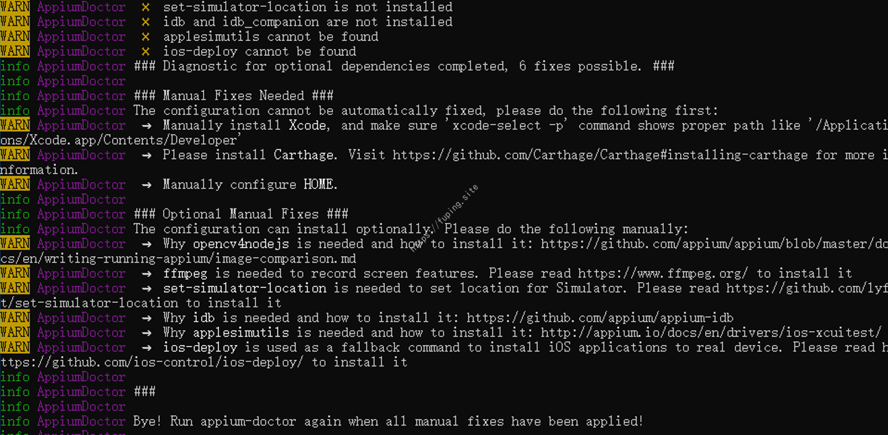
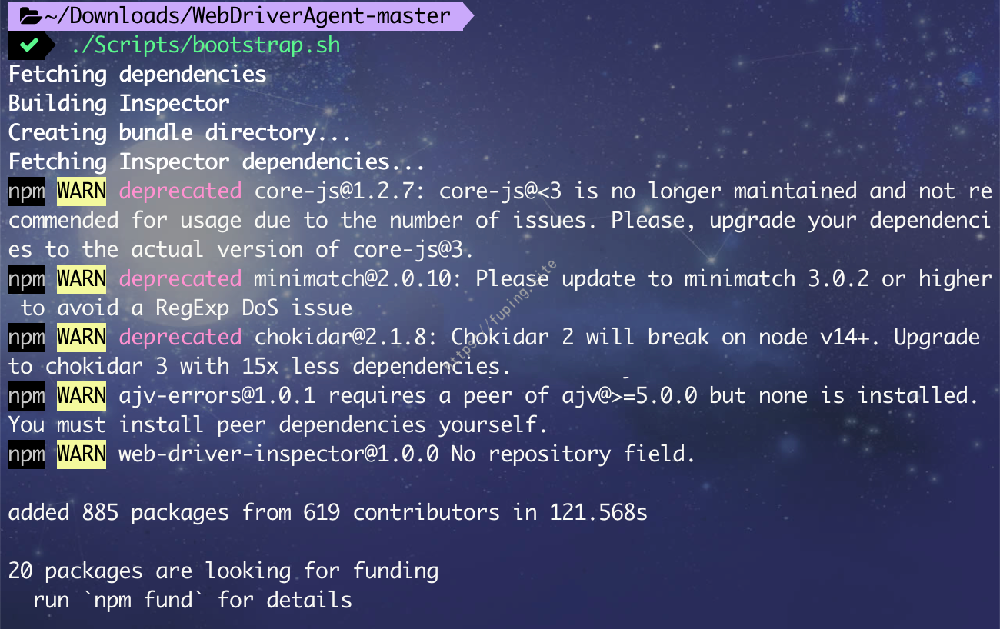
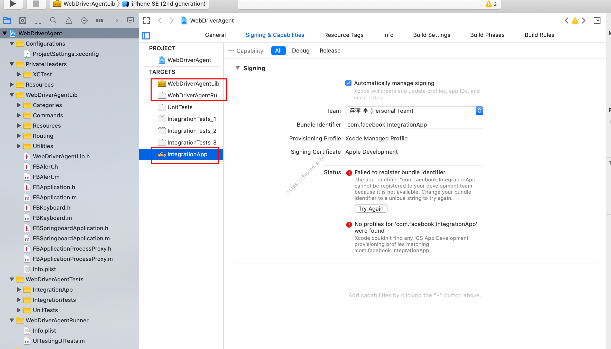
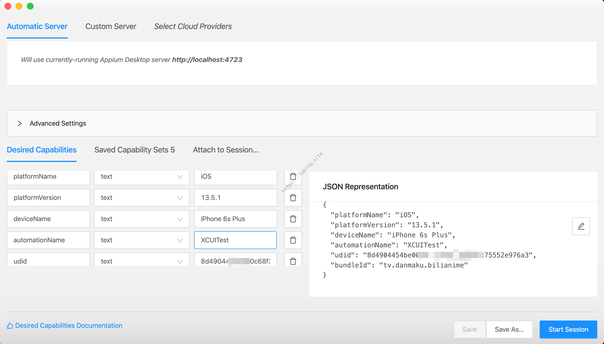
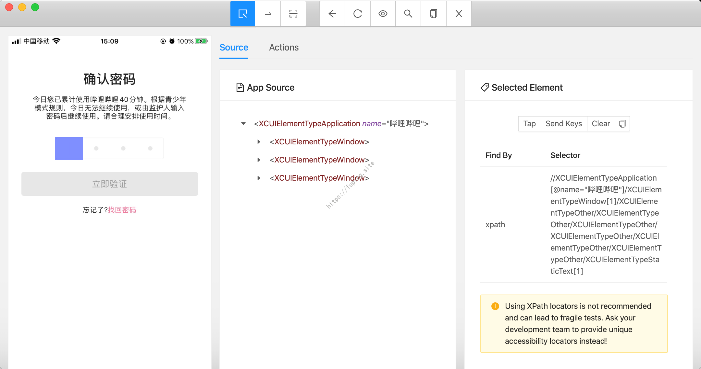
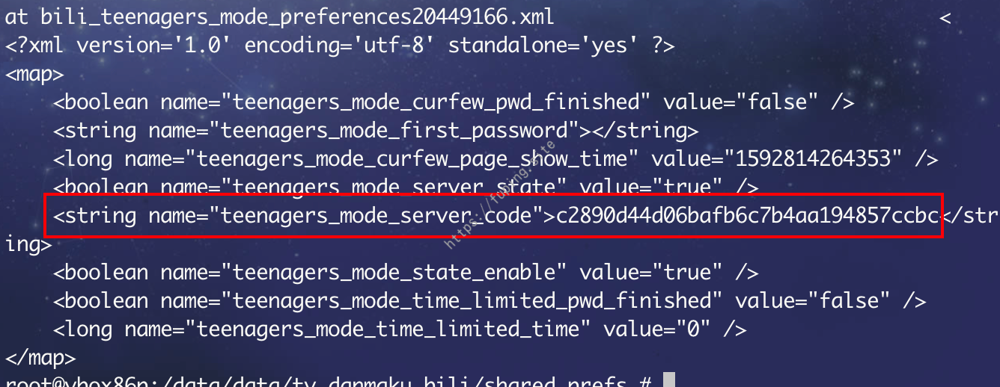

自动化测试工具Appium初探
0x01 前言
前段时间由于给小破站开启了青少年模式，结果密码给忘记了。导致只能看一些学习课堂和书法之类的相关视频。虽然有找回密码选项，但是找回密码需要发送本人手持身份证的照片。而后在输入密码的时候试了多次，除了提示”密码输入错误，请重试”外，没有其他限制，也没有网络请求。由于是4位的数字密码，我想如果我写个自动输入密码的脚本，利用生成0000~9999的密码字典，应该就可以找到正确的密码。
经搜索发现，IOS自动化的框架有很多，如UIAutomation、XCTest、KIF、APPium等。其中UIAutomation和APPium无需源码就可以进行测试，而且APPium支持多种语言，所以这里我选择了APPium。
0x02 环境搭建与自动化测试
Appium相关介绍
Appium 是一个开源工具，用于自动化 iOS 手机、 Android 手机和 Windows 桌面平台上的原生、移动 Web 和混合应用。 它使用WebDriver协议驱动iOS，Android和Windows应用程序。Appium 是跨平台的：它允许用同样的 API 对多平台（iOS、Android、Windows）写测试，做到在 iOS、Android 和 Windows 测试套件之间复用代码。而且支持多种语言，java、python、php、Ruby等等。
我这里是在MacOS系统下进行的测试，采用了手机版本为13.5.1（IOS真机），开发语言选择了Python3.8。
下面就开始搭建环境进行测试吧。
首先是APPium的安装。
APPium相关安装
如果没有安装Homebrew，则需要先安装Homebrew。
1 | /bin/bash -c "$(curl -fsSL https://raw.githubusercontent.com/Homebrew/install/master/install.sh)" |
安装node
1 | brew install node |
安装相关依赖与软件
1 | npm install -g appium # 安装appium |
安装的话根据可以参考http://appium.io/docs/en/about-appium/getting-started/ 进行安装。
也可以直接安装appium桌面程序https://github.com/appium/appium-desktop/releases 。
安装后执行appium-doctor --ios指令，可以查看与iOS相关配置是否完整。
如果有哪一项是打叉的，则根据安装说明进行安装就可以了。

下图是全部配置都成功的情况。
由于需要在真机下进行测试所以还需要配置WebDriverAgent。
配置WebDriverAgent
进入到WebDriverAgent目录，然后执行./Scripts/bootstrap.sh下载安装依赖库。

双击WebDriverAgent.xcodeproj使用xcode打开WebDriverAgent项目
配置WebDriverAgentLib、WebDriverAgentRunner以及IntegrationApp的开发者信息

发现有错误，接下来修改WebDriverAgentRunner和IntegrationApp的Bundle identifier。

修改后发现无报错信息。然后数据线连接真机，进行安装。
发现编译失败，将 assign 改成 unsafe_unretained ，然后重新使用command + u进行编译安装测试。
然后访问http://手机IP:8100。如http://172.20.10.1:8100/status 。
需要手机与电脑处于同一网络下，我这里为了测试，电脑连接的是手机的热点。
此时WebDriverAgent配置成功。如果在Appium中使用时，还需替换Appium中的WebDriverAgent。
我这里的路径为/Applications/Appium.app/Contents/Resources/app/node_modules/appium/node_modules/appium-xcuitest-driver/node_modules/WebDriverAgent
直接替换即可，或者直接修改Appium中的WebDriverAgent，效果一样。
接下来就是自动化脚本的编写。
自动化脚本编写
可以通过使用Appium应用程序查看IOS元素特征。启动Appium，左上角菜单栏选择APPium-New Session Window...(或者快捷键command+N)。

填写对应的启动参数。
一些必要的参数：
- platformName是测试平台的名称，是ios或者Android。
- udid在ios真机测试时需要，可以通过
ios-deploy --list_bundle_id查询 - bundleId需测试程序的bundle id,可以通过
ios-deploy --list_bundle_id查询
配置完成后，点击Start Session，手机会自动打开哔哩哔哩APP。
可以利用xpath获取元素并进行输入、点击等一系列操作。接下来就可以通过使用Python脚本来进行自动化测试了。
需要安装appium的python依赖库。
1 | pip install Appium-Python-Client |
启动APP的脚本如下：
1 | from appium import webdriver #pip install Appium-Python-Client |
运行效果如下：
接下来需要进入到输入密码界面，依次需要点击我的-青少年模式-修改密码（或者关闭青少年模式）。
利用脚本实现就是：
1 | driver.find_element_by_id("我的").click() |
运行效果如下
如果是已经打开app 40分钟，或者非正常时段，则直接显示的是输入密码界面。

可以利用xpath获取密码输入框元素，输入密码后并点击“立即验证”按钮，主要代码如下：
1 | driver.set_value(driver.find_element_by_xpath("//*/XCUIElementTypeStaticText[1]"),pwd[0]) |
完整的代码如下：
1 | from appium import webdriver #pip install Appium-Python-Client |
运行效果
由上面执行的结果来看，每次输入前都会等待一会再输入，所以看起来速度很慢。

通过找到上图标记的XCUIElementTypeOther，然后使用Send Keys直接传入一个四位数字。
1 | driver.find_element_by_xpath("//*/XCUIElementTypeWindow[1]/XCUIElementTypeOther/XCUIElementTypeOther/XCUIElementTypeOther/XCUIElementTypeOther/XCUIElementTypeOther/XCUIElementTypeOther").send_keys(pwd) |
执行结果如图所示。
这里的动图是4倍速播放。
修改过后，发现速度确实有所提升，但是总体速度还是很慢的。经过搜索发现，有帖子说在IOS模拟器上和安卓上会快一些，由于程序无法安装到IOS模拟器，所以这里选择了在安卓设备上进行测试。
安卓环境下测试
安卓的环境需要安装Android SDK、JDK、安卓模拟器(真机也可以，这里采用的是Genymotion模拟器)。安装后配置JAVA_HOME、ANDROID_HOME。
然后通过执行appium-doctor --android来查看是否配置成功，如图所示。
查看android元素信息可以使用uiautomatorviewer。位于Android SDK下的/tools/bin/目录。
启动模拟器并打开测试的APP，然后打开uiautomatorviewer。选择Device Screenshot（从左至右第二个图标）。
通过tv.danmaku.bili:id/et_code可以定位到编辑框，按钮“立即验证”可以通过tv.danmaku.bili:id/operate来定位。
这里直接贴使用安卓下自动化爆破的脚本，代码如下：
1 | from appium import webdriver |
运行效果如图所示
对比之下，在Android下的效率是很快的。而且经过测试，安卓破解100次，耗时约139.14s，而ios破解50次，耗时约262.56s。
所以最后我采用了安卓环境下进行破解，最终成功跑出了密码。
已经成功找到密码4578。
0x03 思考
由于输入密码的时候并没有发生网络请求，猜测密码应该保存在本地。一般情况下本地存储采用sqlite数据库或者是SharePreferences中。
先查看SharePreferences中的文件，进入/data/data/tv.danmaku.bili/shared_prefs目录。
发现文件bili_teenagers_mode_preferences20449166.xml，根据文件名发现文件就是和青少年模式有关的配置文件。查看里面的内容

发现一串神秘字符串，通过cmd5查询：c2890d44d06bafb6c7b4aa194857ccbc=md5(4578)。正好是设置的密码。
另外由于登录前可以看到所有的内容，而登录开启青少年模式的账户时，就会进入青少年模式，只能看特定内容。所以退出账户重新登录并抓包，可以看到如下的请求。
也成功找到经过md5加密的密码。
0x04 总结
这次是因为B站开启了青少年模式，后来密码给忘记了。当时只想着用爆破的方式来解决了，没有想着抓包或者查看保存的数据文件。后来爆破出密码后，又发现可以通过查看配置文件的方式和抓包的方式找到密码。而且之前是打算用ios作为测试的，后来因为效率的问题，才转战安卓。如果使用安卓的话，自动化测试工具也很多，例如UIAutomator2等。
本文其实就是一个流水账，记录一下自己找回青少年模式密码的过程，可能比较粗糙。有关IOS真机调试更详细的教程可以参考使用Appium进行iOS的真机自动化测试 。